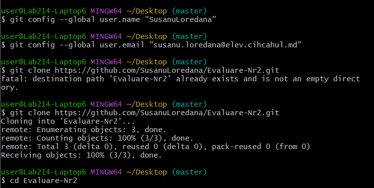
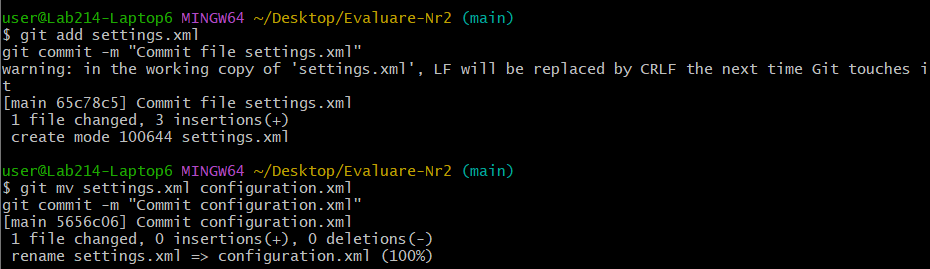
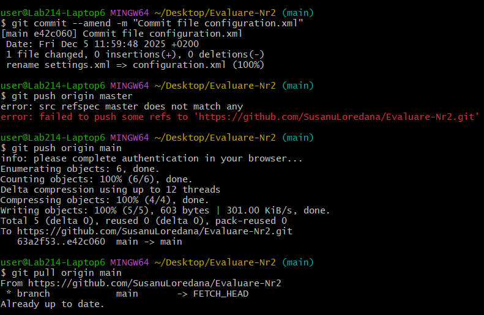
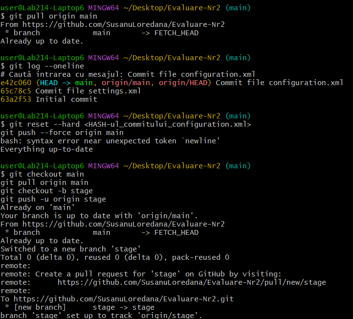
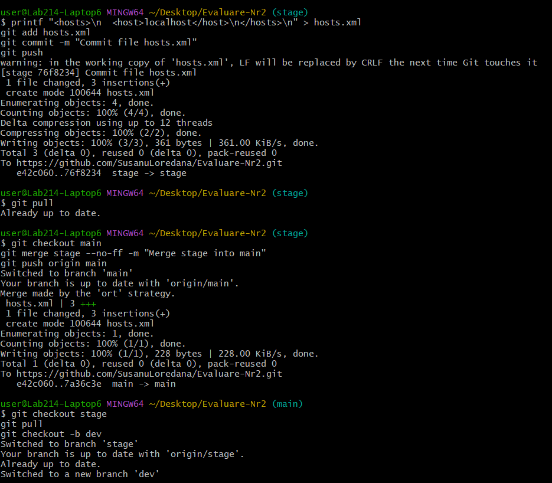
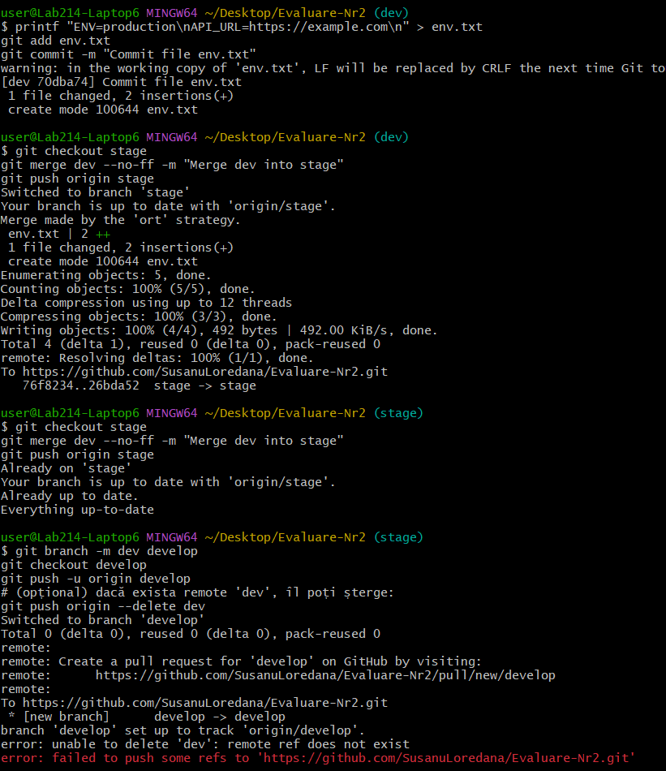

Autor: Susanu • Data: 05 Dec 2025 • Durata: 50 min
git add settings.xml
git commit -m "Commit file settings.xml"

git mv settings.xml configuration.xml
git commit -m "Commit configuration.xml"
git commit --amend -m "Commit file configuration.xml"

git push origin main
git log --oneline
git reset --hard <HASH>
git push --force origin main

git checkout -b stage
printf "<hosts>\n <host>localhost</host>\n</hosts>\n" > hosts.xml
git add hosts.xml
git commit -m "Commit file hosts.xml"
git push

git checkout main
git merge stage --no-ff -m "Merge stage into main"
git push origin main

git checkout -b dev
printf "ENV=production\nAPI_URL=https://example.com\n" > env.txt
git add env.txt
git commit -m "Commit file env.txt"
git checkout stage
git merge dev --no-ff -m "Merge dev into stage"
git push origin stage
git branch -m dev develop
git checkout develop
git push -u origin develop
git push origin --delete dev